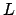

Next: 6.4 The Covariance Matrix Up: 6. The fit Command: Previous: 6.2 The Probability Density Contents Index
To estimate the error in the best-fitting parameter values that we find, we
assume
 to be approximated by an
to be approximated by an
 -dimensional Gaussian
distribution around
. Taking a Taylor expansion of
about
, we can write:
-dimensional Gaussian
distribution around
. Taking a Taylor expansion of
about
, we can write:
Since the logarithm of a Gaussian distribution is a parabola, the quadratic
terms in the above expansion encode the Gaussian component of the probability
distribution
 about
.6.1 We may write the sum of these terms, which we denote , in matrix
form:
about
.6.1 We may write the sum of these terms, which we denote , in matrix
form:
where the superscript represents the transpose of the vector displacement from , and is the Hessian matrix of , given by:
| (6.6) |
This is the Hessian matrix which is output by the fit command. In
general, an
 -dimensional Gaussian distribution such as that given
by equation (6.4) yields elliptical contours of
equiprobability in parameter space, whose principal axes need not be aligned
with our chosen coordinate axes - the variables
. The
eigenvectors
of
are the principal axes of these
ellipses, and the corresponding eigenvalues equal
,
where
-dimensional Gaussian distribution such as that given
by equation (6.4) yields elliptical contours of
equiprobability in parameter space, whose principal axes need not be aligned
with our chosen coordinate axes - the variables
. The
eigenvectors
of
are the principal axes of these
ellipses, and the corresponding eigenvalues equal
,
where  is the standard deviation of the probability density function
along the direction of these axes.
is the standard deviation of the probability density function
along the direction of these axes.
This can be visualised by imagining that we diagonalise , and expand equation (6.5) in our diagonal basis. The resulting expression for is a sum of square terms; the cross terms vanish in this basis by definition. The equations of the equiprobability contours become the equations of ellipses:
| (6.7) |
where is some constant. By comparison with the equation for the
logarithm of a Gaussian distribution, we can associate with
 in our eigenvector basis.
in our eigenvector basis.
The problem of evaluating the standard deviations of our variables is more complicated, however, as we are attempting to evaluate the width of these elliptical equiprobability contours in directions which are, in general, not aligned with their principal axes. To achieve this, we first convert our Hessian matrix into a covariance matrix.